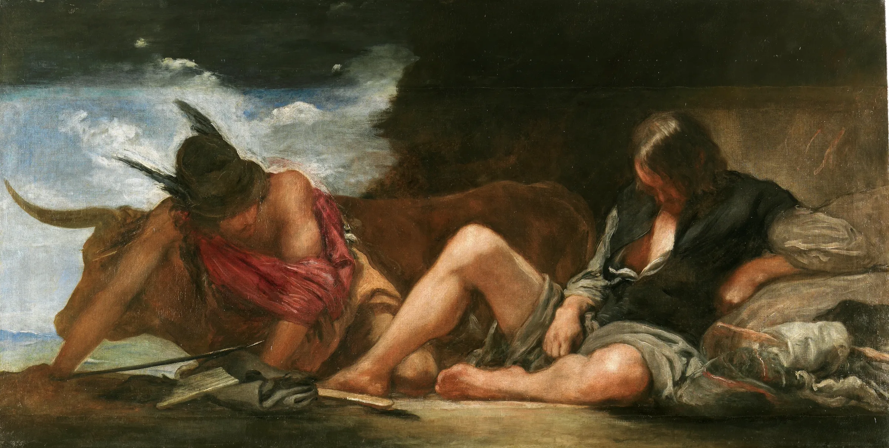
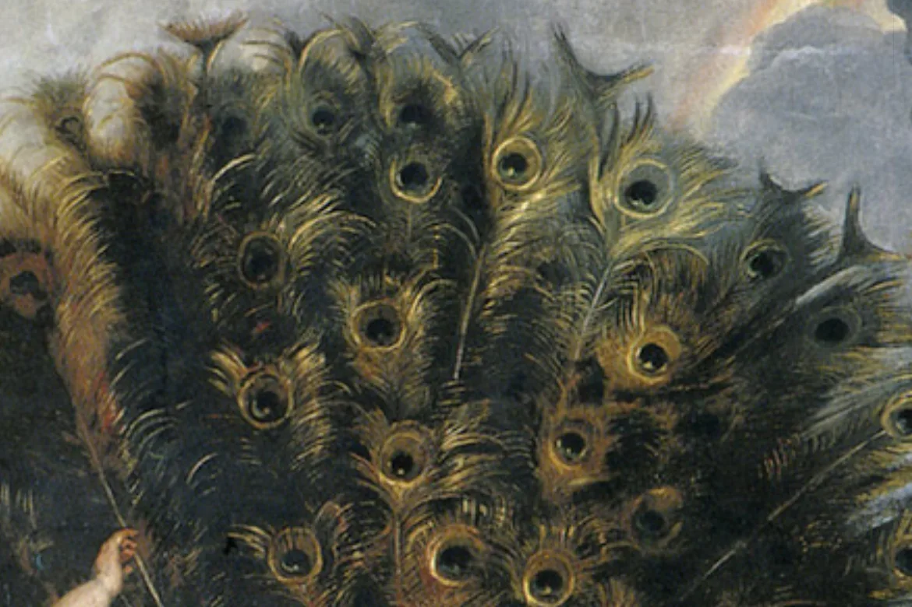

Don't close the door.Make them prove it.
AI made pull requests cheap to write and slow to check. Add the argus label to one, and four agents prove or break its claim with real tests, then post the evidence on GitHub.
Diego Velázquez, Mercury and Argus, c. 1659 (detail)
- TRIAGER · Claude · scopingClaim: parse_date('') no longer raisesscope.json
- REPRODUCER · Codex · reproducingtest_argus_2.py @ mainFAILED
- REPRODUCER · Codex · reproducingtest_argus_2.py @ pr-2PASSED
- SKEPTIC · Claude · challengingWhitespace-only input still crashesFAILED
- SCRIBE · Claude · reportingEvidence comment posted on GitHubcomment.md
The Skeptic's probes on pr-2
Demo scenario on argus-v1/datewise, replayed
Pull requests got cheap to write. Checking one still costs an hour.
A maintainer wakes up to thirty of them. Most look professional and many were written by an AI in seconds. Some fix nothing. She can burn out reviewing every one, or stop taking outside contributions. Argus is the third choice.
Looks finished
Clean diff, confident description, no test. Reading it tells you nothing about whether the bug is gone.
Fixes the example, not the bug
It handles the exact input in the issue. The input next to it still crashes, and nobody tried it.
Or the door closes
Some projects have already stopped taking outside pull requests. The honest contributor loses the most.

A hundred eyes, never all closed at once.
In the myth, Hermes played music until every one of Argus's eyes fell shut. A pull request that reads well plays the same tune. Argus keeps one agent awake whose only job is to break the proof, and it runs on a different model from the agent that wrote it.
Peter Paul Rubens, Juno and Argus, c. 1610 (detail)
Four agents. One claim. Every step on the record.
They work in your team's Discord room, so you can watch or step in. Each one does a single job, hands its file to the next, and says what it ran. Scroll to follow one run.
TRIAGER · PR #2 · scoping
Claim: parse_date('') returns None instead of raising.
> read pr.json, issue #1, CONTRIBUTING.md -> scope.jsonmodel: Claude · 9s
STATUS: doneREPRODUCER · PR #2 · reproducing Bug is real: IndexError on main. The PR's code passes. > pytest test_argus_2.py @ main -> FAILED > pytest test_argus_2.py @ pr-2 -> PASSEDmodel: Codex · 32s STATUS: done
SKEPTIC · PR #2 · challenging Passes for ''. Fails for ' ' (whitespace). Same IndexError. > pytest test_argus_2_probes.py::test_whitespace -> FAILEDmodel: Claude · 31s STATUS: done
SCRIBE · PR #2 · reporting Verdict: changes needed. Evidence comment ready for GitHub. > 4 claims checked -> 3 passed · 1 failedmodel: Claude · 7s STATUS: done
One comment. Fifteen seconds. Every line has a receipt.
The verdict and its one reason come first. Each claim names the command that proved it. Logs fold away until you want them, and the full timeline and a bundle to re-run it yourself are one click down.
# the maintainer adds one label + argus # Argus answers with its status label + verifying agents are working ~ changes-needed a claim failed ~ verified every claim proven
$ run_tests --ref main --test tests/test_argus_2.py ref main @ 3f9c2e1 · cpus 1 · timeout 60s tests/test_argus_2.py::test_empty_string FAILED text = text.strip() > if text[0] == "+": E IndexError: string index out of range 1 failed in 0.21s
Argus verification · PR #2
'' but ' ' still crashes.| Claim | Result | Proof |
|---|---|---|
Bug exists on main | ✔ | test_argus_2.py fails with IndexError |
PR fixes '' | ✔ | same test passes on pr-2 |
Whitespace ' ' | ✘ | probe fails with IndexError |
| Existing suite | ✔ | 19 passed, 0 failed |
Reproduction on main
Skeptic's probes on pr-2
Investigation timeline · Verify it yourself
Your repo. Your room. Your merge button.
Argus fits the flow you already have. The GitHub thread stays the record, Discord is the side channel, and approvals happen where they always did.
Add one label. Get the proof.
0 pull requests verified so far, each with a public page.